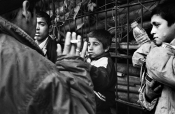

 |
Türk Hukuk Sisteminde Çocuk ve Suç
|
Türkiye'de hızlı bir toplumsal değişim süreci
yaşanmaktadır. Bu süreç tanım toplumundan
sanayi toplumuna ve küresel gelişmelerin
paralelinde de bilgi toplumuna dooğru hızla
ilerleme şeklinde görülmektedir. Bir anlamda
geçiş dönemi olan bu süreçte, başta ekonomik
geçiş dönemi olan bu süreçte, başta ekonomik
alanda büyük değişimler yaşanmaktadır. Bütün bu gelişmeler karşısında, yasal mevzuat ve
|
|
sosyal kontrol sistemleri yetersiz kalmakta ve ihtiyaca cevap verememektedir. Bu nedenle sosyal cevrede pek çok olumsuz şartlar meydana gelmekte ve birçok hukuksal ve sosyal sorunlar ortaya çıkmaktadır.
Çağımızın önemli sorunlanndan birisi kuşkusuz çocuklaın suça yönelmesidir. Çocuk ve suç kavramlarını birbiriyle bağdaştıramasak ta son yıllarda münferit ve örgütlü suçlarda mağdur ve şuça iştirak eden çocuk sayısındaki artış dikkat çekmektedir. Her ne kadar suçun tarihi, Insanlık tarihi kadar eskiyse de suçlu çocuklar ve bu çocuklara farklı yaklaşım düşüncesi 19. yüzyılda ortaya çıkan, son yüzyılın ortalanında iyice belirginleşen ve bugün adeta ülkelerin gelişmişliğinin ölçüsü durumundaki bir düşüncedir
Durkheim, Hiçbir toplum yoktur ki, orada suçluluk olmasın. Suç biçim değiştirir, suç olarak vasıflandınlan fiiller her yerde aynı değildir, fakat her yerde ve her zaman cezai baskıyı üzerine çekecek tarzda insanlar olmuştur (Aytekin, 1986:111) diyerek, suçun evrenselliğine ve göreliliğine dikkat çeker. Yine Durkheim'a göre, suç ortak bilincin yasakladığı harekettir. Bu hareketin birkaç yüzyıl sonrasının ya da başka bir toplumdan gözlemcinin gözünde masum olmasının hiçbir önemi yoktur (Aron, 1994:229) Jhering'e göre, suç toplum halinde yaşama şartlaına yönelmiş her türlü saldınlardır (Dönmezer, 2002:1).
|
|